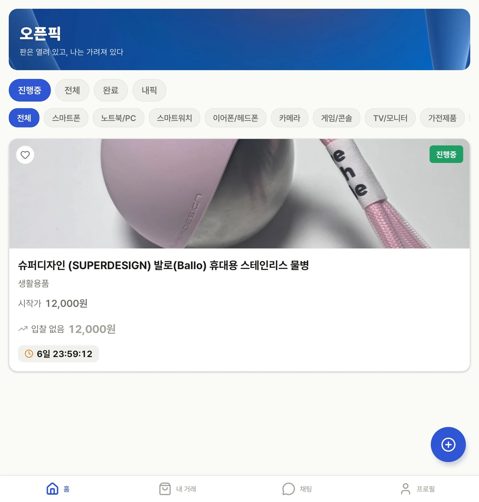
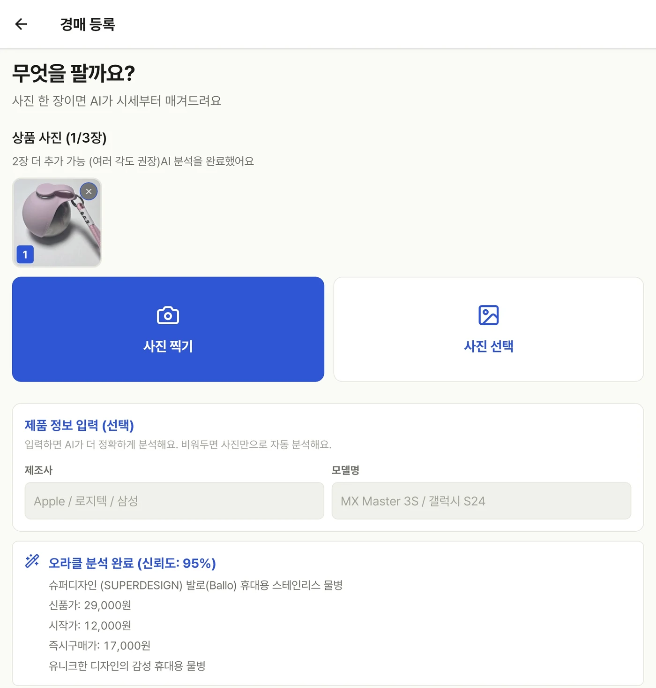
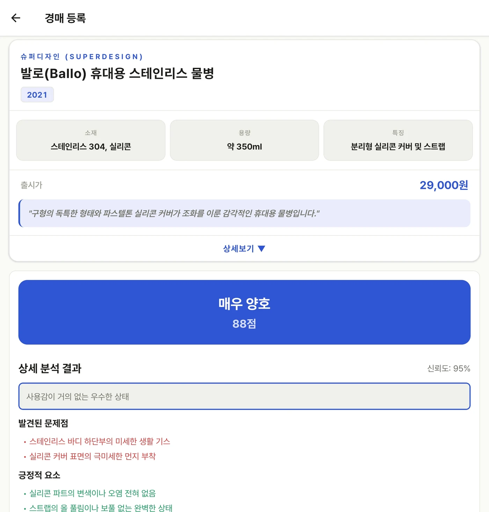
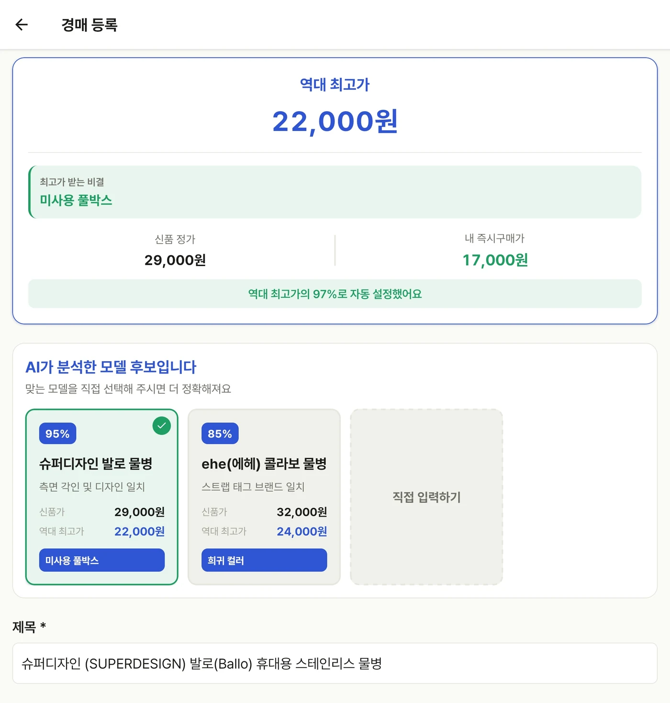
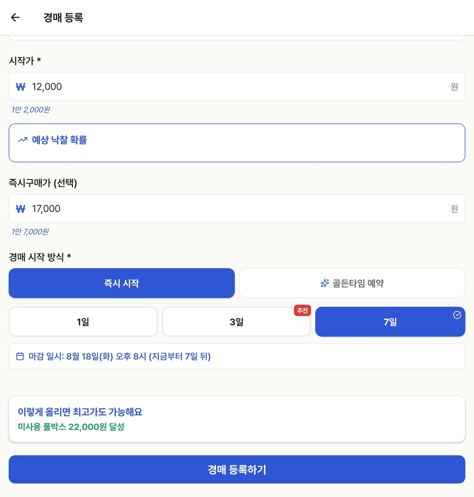
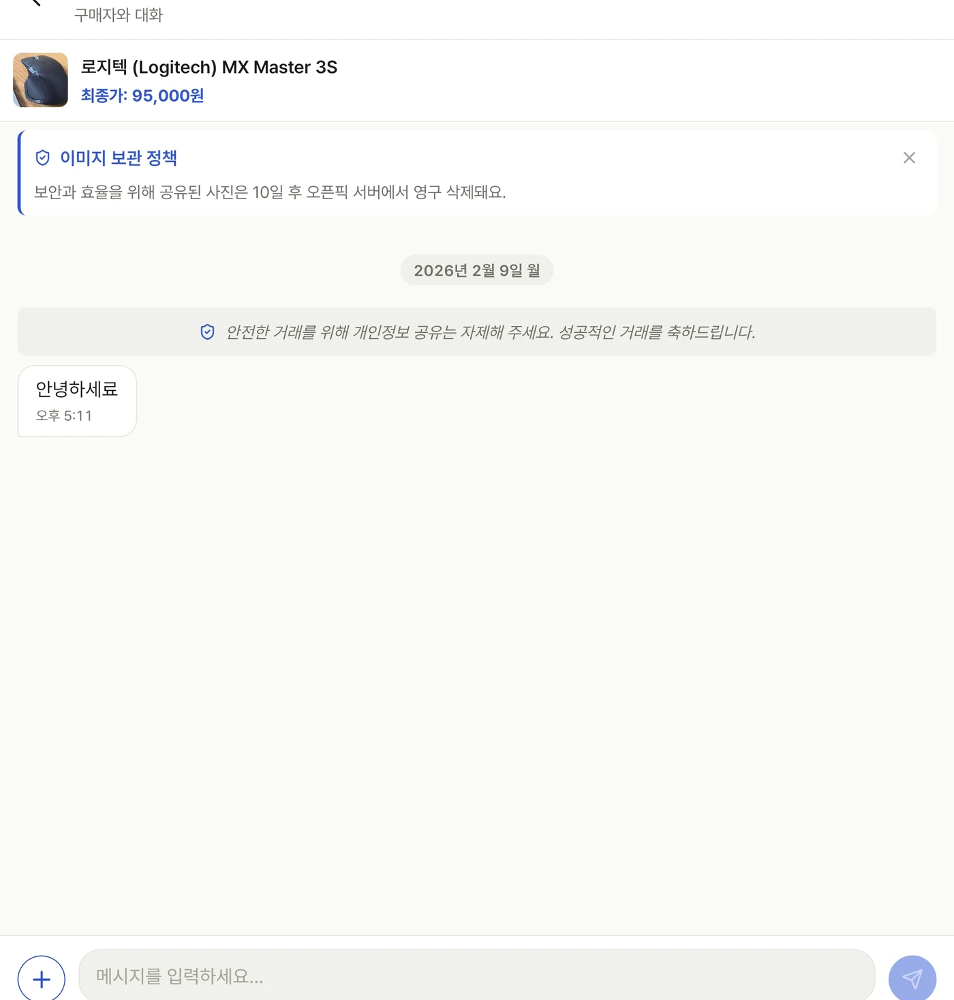

사진을 올려요
카메라로 찍거나 앨범에서 선택합니다. 여러 각도의 사진을 추가하면 상태 확인에 도움이 됩니다.
실물 중고 물품의 정보를 정리하고, 판매자가 조건을 선택해 누구에게나 열린 경매를 시작합니다.

팔고 싶은 물건을 촬영하고, 분석 결과를 확인한 뒤, 내가 원하는 가격과 기간을 선택하세요. 오픈픽은 결정을 대신하지 않고 더 빠르게 결정하도록 돕습니다.
카메라로 찍거나 앨범에서 선택합니다. 여러 각도의 사진을 추가하면 상태 확인에 도움이 됩니다.
상품 후보·상태·참고 가격을 검토하고 실제 물건과 다른 부분은 직접 수정합니다.
시작가, 선택형 즉시구매가, 시작 방식과 기간을 정해 등록합니다.
아래 가격·점수·날짜는 촬영 당시의 예시입니다. 실제 분석과 제공 옵션은 상품, 데이터, 앱 버전에 따라 달라질 수 있습니다.

상품 사진을 촬영하거나 앨범에서 고릅니다. 제조사와 모델명은 선택 입력이며, 알고 있다면 분석 정확도를 높이는 데 도움을 줄 수 있습니다.

모델 정보, 소재, 특징과 상태 분석을 한 화면에서 확인합니다. AI 결과는 등록을 돕는 후보이므로 판매자가 실물과 대조해 최종 내용을 결정해야 합니다.

AI가 찾은 모델 후보와 참고 가격을 비교한 뒤 시작가를 결정합니다. 즉시구매가는 선택사항이며 직접 입력도 가능합니다.

바로 시작하거나 화면에 제공된 골든타임 예약을 선택할 수 있습니다. 캡처된 버전에서는 1일·3일·7일 옵션을 제공하며 마감 예정 시간을 확인한 뒤 등록합니다.
진행 중·전체·완료·내픽 상태와 카테고리 필터로 상품을 찾습니다. 구매자는 현재 가격과 남은 시간을 확인하고 자신의 판단으로 참여합니다.

상품과 최종 가격을 확인하며 구매자·판매자가 필요한 내용을 협의합니다. 연락처, 계좌, 인증정보 같은 민감정보는 채팅에 올리지 말고 앱의 최신 안전 안내를 따르세요.
정해진 가격을 그대로 받아들이는 대신, 판매자와 구매자가 공개된 정보 위에서 각자의 선택을 이어가는 거래 경험을 지향합니다.
사진과 상태 정보를 바탕으로 물건을 확인하고, 분석 후보는 판매자가 다시 검토합니다.
진행 상황을 확인하며 참여해 시장의 선택으로 가격이 형성됩니다.
시작가와 선택형 즉시구매가, 시작 방식과 기간을 판매자가 결정합니다.
화면과 정책은 앱 버전에 따라 달라질 수 있으므로 실제 사용 시 최신 안내를 함께 확인하세요.
아닙니다. 분석 결과와 가격은 참고 후보이며, 판매자가 확인하고 시작가를 직접 결정합니다.
캡처된 등록 화면에서 즉시구매가는 선택사항입니다. 경매 방식과 판매 계획에 맞게 결정하세요.
등록은 한 장으로 시작할 수 있지만, 구매자가 상태를 판단할 수 있도록 앞·뒤·측면과 흠집 등 여러 각도를 보여주는 것이 좋습니다.
민감한 개인정보와 결제정보 공유는 피하고, 앱에 표시되는 최신 거래·보안 안내를 따르세요.
한 번 더 확인하면 구매자는 더 안심하고, 판매자는 불필요한 분쟁을 줄일 수 있습니다.